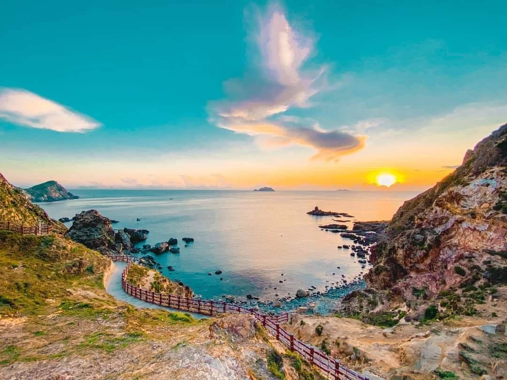
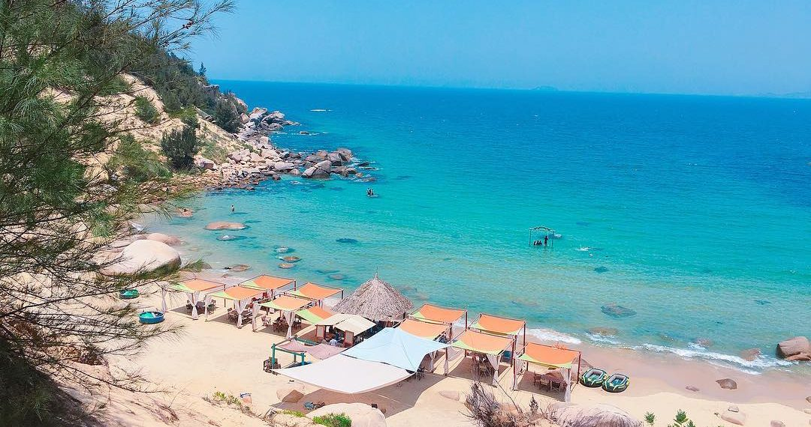
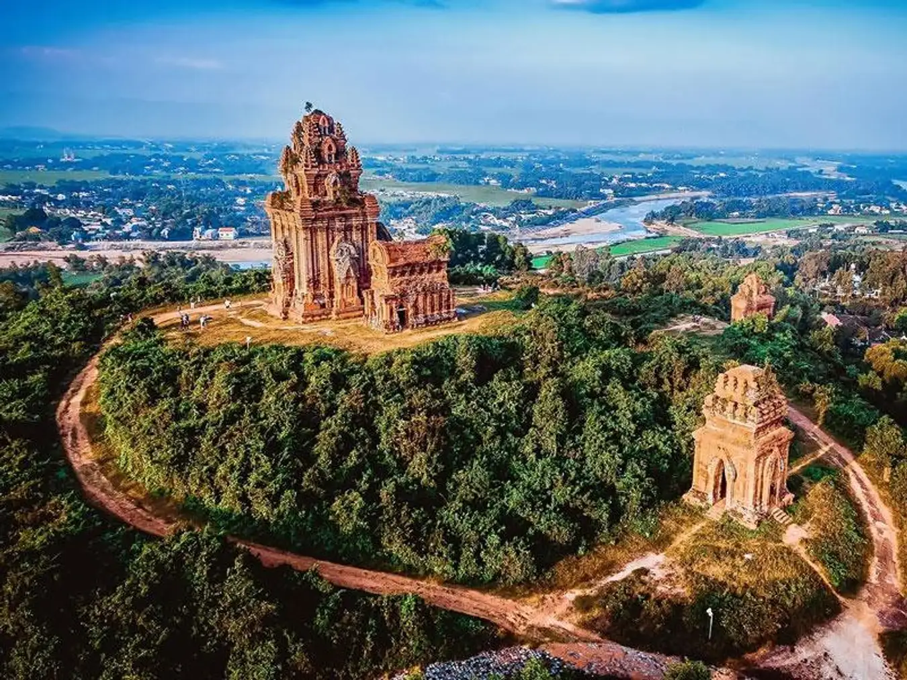

Khám phá danh lam thắng cảnh Bình Định
Bình Định là một tỉnh duyên hải thuộc vùng Nam Trung Bộ của Việt Nam, nổi tiếng với cảnh quan thiên nhiên tuyệt đẹp và bề dày lịch sử văn hóa lâu đời. Nơi đây sở hữu nhiều bãi biển trong xanh, cát trắng mịn cùng những ghềnh đá độc đáo tạo nên phong cảnh rất đặc trưng của miền biển miền Trung.
Thành phố Quy Nhơn – trung tâm của tỉnh Bình Định – là một điểm đến du lịch nổi tiếng thu hút đông đảo du khách trong và ngoài nước. Khi đến Bình Định, du khách có thể khám phá nhiều địa danh nổi tiếng như Kỳ Co với làn nước trong xanh, Eo Gió với những vách đá uốn lượn hùng vĩ, khu du lịch Trung Lương thơ mộng hay quần thể tháp Chăm cổ kính như Tháp Bánh Ít.
Không chỉ có cảnh đẹp thiên nhiên, Bình Định còn được biết đến là vùng đất võ nổi tiếng của Việt Nam, nơi lưu giữ nhiều giá trị văn hóa truyền thống đặc sắc. Với sự kết hợp giữa thiên nhiên, lịch sử và văn hóa, Bình Định ngày càng trở thành một điểm đến hấp dẫn đối với du khách yêu thích khám phá và trải nghiệm.
Kỳ Co là một bãi biển nổi tiếng ở Quy Nhơn với nước biển xanh trong và bãi cát trắng tuyệt đẹp.

Eo Gió có những vách đá uốn lượn ôm lấy biển và là nơi ngắm hoàng hôn rất đẹp.

Khu du lịch Trung Lương nổi tiếng với phong cảnh thiên nhiên đẹp và khu cắm trại ven biển.

Tháp Bánh Ít là công trình kiến trúc Chăm cổ nổi tiếng có giá trị lịch sử và văn hóa.